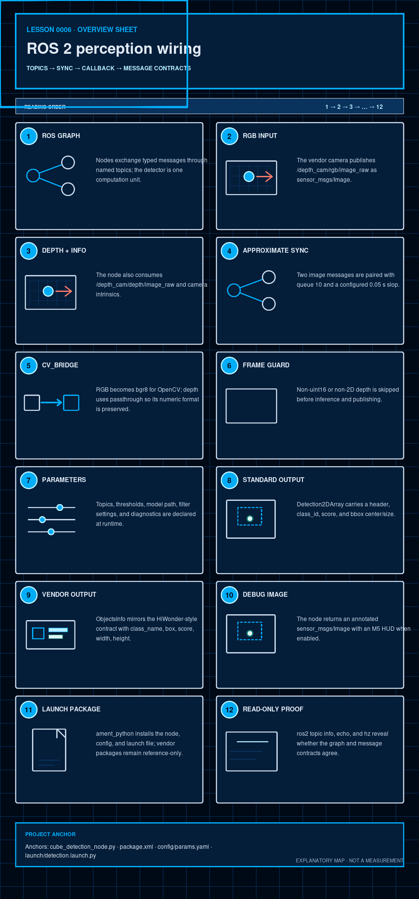

Software · AI · Robotics / Learning system
Lesson 0006 — ROS 2 perception wiring
A perception system is an integration contract as much as a model. Learn how topics, synchronization, conversions, parameters, and message types make the detector usable.
How to use this lesson
Read the explanation, inspect the visual, make a prediction, and then compare it with the repository evidence. The goal is a model of this project that you can explain—not a list of framework slogans.
Prerequisites and scope
This lesson assumes ordinary event-driven programming and the inference pipeline from Lessons 0002 and 0005, but no ROS experience. Treat ROS 2 as the typed, asynchronous boundary around the computer-vision code.

The question this lesson answers
How do ROS 2 messages travel from the vendor camera into the detector and back out as useful results? The answer is a typed graph: named topics connect publishers and subscribers, the node pairs RGB with depth, the callback converts and processes the messages, and output converters preserve the contract expected by downstream tools.
By the end, you should be able to
- distinguish a node, topic, message type, publisher, subscription, callback, and executor;
- trace one RGB/depth pair through every early-return and publication boundary;
- explain timestamp synchronization, queue pressure, QoS compatibility, encodings, and frame IDs;
- separate launch-time configuration from parameters that truly update live behavior;
- distinguish an empty detection message from a missing output message and from healthy inference.
ROS vocabulary in one paragraph
A node is a running computation component. A topic is a named asynchronous stream. A publisher writes typed messages and a subscriber receives them through callbacks. The message type is the interface contract. A message header carries a timestamp and coordinate-frame name so consumers can reason about when and where the data applies.
ROS 2 uses middleware—normally a DDS implementation—to discover participants and transport messages. The graph is dynamic and many-to-many: a topic is not a function call and does not imply exactly one producer or consumer. Delivery also depends on compatible QoS policies and a running executor that services callbacks.
1. A node is one computation unit
ROS 2 nodes communicate through typed interfaces. The project node is named cube_detection_node in the recognition_of_different_colored_cubes package. It does not own the vendor camera; it consumes the camera's topics and publishes cube-recognition results.
The topic names are part of the integration contract. A correct Python function is not enough if the graph names or message types do not match.
The node runs under an executor, which waits for subscriptions and invokes ready callbacks. The current main() uses ordinary rclpy.spin(node). A long synchronous inference callback occupies its execution path; if camera messages arrive faster than callbacks complete, queueing and dropping policy determine which data survives.
2. The current input topics
The node declares these inputs:
/depth_cam/rgb/image_raw— RGBsensor_msgs/Image./depth_cam/depth/image_raw— depthsensor_msgs/Image./depth_cam/rgb/camera_info—sensor_msgs/CameraInfoused to update intrinsics once.
The first two are paired by message_filters.ApproximateTimeSynchronizer. The vendor bring-up must be running separately; detection.launch.py starts only this project node.
The RGB header.stamp becomes the timestamp of all three outputs, and its frame_id names the optical coordinate frame associated with the 2-D boxes. Copying a header preserves provenance; it does not transform coordinates into another frame.
3. Approximate synchronization is a policy
The current configuration uses a queue size of 10 and sync_slop_sec=0.05. That allows a nearby RGB/depth timestamp pair rather than requiring byte-for-byte identical timestamps. A larger slop may pair older or less-related frames; a smaller slop may drop pairs when streams do not line up. The value is a systems trade-off, not a model hyperparameter.
RGB and depth are produced independently, so exact timestamp equality is uncommon. If the robot or object moves, too much time separation means an RGB box can be paired with depth from a different physical pose. The queue keeps recent messages while the synchronizer searches for pairs; it does not guarantee that every camera frame reaches inference when callbacks fall behind.
Three distinct reasons a frame may not become an output
It may never form a synchronized pair; the callback may return early after conversion/depth validation; or the process may be delayed or stopped before publishing. An empty Detection2DArray means publication occurred with zero kept objects. No message means a different systems symptom.
QoS detail: qos_profile_sensor_data is explicit for the separate CameraInfo subscription, but the current message_filters.Subscriber calls for RGB and depth do not pass an explicit QoS profile. The vendor launch exposes QoS choices, so actual compatibility must be checked with ros2 topic info -v; do not infer image QoS from the imported symbol. [node · ROS 2 Humble QoS]
Interactive: inspect a timestamp decision
RGB at t=10.000 s and depth at t=10.018 s differ by 18 ms, so they are within the 50 ms slop.
4. cv_bridge turns messages into arrays
In _sync_cb(), CvBridge.imgmsg_to_cv2() converts the RGB message with desired encoding bgr8. The node then reverses BGR to RGB inside _infer() before model preprocessing. Depth uses desired_encoding="passthrough" so the numeric depth representation is not silently converted.
An image message also declares an encoding. Encoding determines channel meaning and numeric type; width and height determine shape; row step describes storage spacing. Equal dimensions do not prove RGB/depth registration, and a three-channel color array is not interchangeable with a one-channel millimetre depth array.
bgr8 means three unsigned 8-bit channels ordered blue, green, red. passthrough asks cv_bridge to preserve the depth message's underlying representation. It does not prove that the units are millimetres; that unit contract must come from the camera driver and be checked against observed metadata.
5. A depth-format guard protects the geometry branch
Before inference, the node requires a two-dimensional numpy.uint16 depth array. The M4c1 contract interprets those values as millimetres, with zero as invalid. If the depth image is missing, has the wrong dtype, or has the wrong rank, the current callback returns early and skips that frame. This is deliberately different from the geometry helper's per-box low-quality policy.
This guard checks representation, not registration. Geometry also assumes the depth pixel at (u,v) describes the same camera ray as RGB pixel (u,v). Matching width and height cannot establish that calibration relationship.
6. The callback is a pipeline, not one magic function
- Increment synchronization counters and convert RGB/depth.
- Validate the depth shape/type.
- Run TensorRT inference when the engine is loaded; otherwise use the empty no-inference path.
- Apply geometry decisions to decoded candidates.
- Publish the standard, vendor, and optional debug outputs.
- Record total, YOLO, and filter timing and periodically log p50/p95 summaries.
Exceptions and early returns are observable behavior too. A one-time bridge warning avoids log flooding, but later conversion failures can then be easy to miss. Likewise, the no-engine path publishes empty arrays rather than stopping startup. Operational monitoring must combine topic output with logs and engine state.
7. Parameters make the boundary inspectable
config/params.yaml supplies the same groups visible in __init__(): topic names, publish toggles, model path, thresholds, image size, synchronization settings, geometry settings, camera intrinsics, and diagnostics. The node declares 29 parameters rather than hiding deployment choices in constants.
QoS (Quality of Service) controls delivery behavior: reliability, how much history is retained, and whether late subscribers receive old values. Camera streams often prioritize fresh data over perfect delivery. Publisher and subscriber policies must be compatible, which is why “the topic exists” does not by itself prove the callback can receive it.
The declared fallback_model_path is not consumed by the current implementation; model_path controls actual engine lookup. A parameter being present in YAML is not proof that the runtime uses it.
Startup value versus live update
The constructor reads declared parameters into ordinary Python attributes once. The current node does not register an on-set-parameters callback and does not reread those values during inference. Therefore ros2 param set may change the parameter service's stored value without changing current detection behavior; restart with the desired configuration unless a future implementation adds and verifies live-update handling.
A parameter file is configuration input, not proof of runtime state. The effective value can also be affected by launch overrides or defaults. Use ros2 param get and startup logs to inspect what the process received, while remembering that the current cached Python attributes do not follow later service changes.
8. The standard ROS output
_to_detection_array_msg() creates a vision_msgs/Detection2DArray and copies the RGB header. Each Detection2D contains a hypothesis with class_id and score, plus a bounding box represented by center x/y and size_x/size_y. Downstream ROS tools can consume this standard shape without knowing the internal CubeDetection dataclass. [vision_msgs]
The score is the model's retained class score, not a calibrated probability that the physical object is truly a cube. The bounding box remains in image pixels in the copied RGB frame. It is not a 3-D pose, distance, or world coordinate.
9. The vendor compatibility output
When enabled, _to_vendor_objects_msg() creates interfaces/ObjectsInfo. Each ObjectInfo receives class_name, integer box, score, and the image width/height. This is why interfaces is an execution dependency even though the package does not define that vendor message.
This is an adapter: it expresses the same kept detections in a vendor-specific schema. Maintaining both outputs creates a consistency obligation—class, score, box, header, and dimensions must continue to describe the same result after future changes.
10. The debug image is an operator view
_to_debug_image_msg() draws kept boxes and an M5 HUD such as confidence threshold, filter state, and keep count, then converts the image back to sensor_msgs/Image. A debug image can show that the node is alive, but a HUD saying keep=0 is not evidence that the camera saw no objects; it is only the output of the current pipeline.
11. Package and launch wiring
package.xml declares rclpy, image/message packages, message_filters, NumPy, PIL, PyTorch, torchvision, and the vendor interfaces dependency. setup.py installs the package, config, launch file, and console entry point. The launch file resolves the installed package share directory and passes the installed config/params.yaml.
These files answer different questions: package.xml declares ROS package metadata and dependencies; setup.py installs Python modules, data files, and the console entry point; the launch file instantiates the executable with configuration. None starts the vendor camera stack.
Boundary to respect
Vendor packages are infrastructure/reference material. The project consumes their topics and message contract but must not modify their source files or the Jetson vendor service.
12. Check your understanding
What does the 0.05 s synchronization slop mean?
Which data belongs in Detection2DArray?
Why is the depth guard important?
How is “no message” different from an empty Detection2DArray?
13. Read-only graph and source exercise
First, run a genuinely read-only syntax check from the repository root. Unlike py_compile, this does not create __pycache__ files:
python3 -c "import ast, pathlib; files=['recognition_of_different_colored_cubes/cube_detection_node.py','recognition_of_different_colored_cubes/geometry_filter.py']; [ast.parse(pathlib.Path(f).read_text(), filename=f) for f in files]; print('syntax OK')"Then, on a Jetson with the vendor stack already running, use only read-only graph inspection:
ros2 topic info /depth_cam/rgb/image_raw -v
ros2 topic info /cube_detections -v
ros2 topic echo /cube_detections/vendor_objects --once
ros2 topic hz /cube_detectionsThe first command is environment-independent and should exit successfully on this checkout. The ROS commands require the live ROS graph; do not start or stop vendor services as part of this lesson.
Add ros2 param get /cube_detection_node confidence_threshold and compare it with the startup log. Do not infer that changing it live changes cached inference behavior; Section 7 explains why.
14. Explain it back
Explain this without reading: “How does one RGB/depth pair become three different ROS 2 outputs, and where can a frame be dropped before publication?”
Point to _sync_cb(), cv_bridge, the depth guard, and the three output converters.
What this lesson intentionally postpones
This lesson intentionally postpones multi-machine DDS discovery, detailed QoS tuning, callback groups/executor concurrency, lifecycle nodes, and vendor camera internals. The official ROS references below own those topics. Lesson 0007 examines the aligned-depth assumption and geometry computations used after ROS delivers a pair.
Primary references and next lesson
- ROS 2 QoS concepts — compatibility rules for publishers and subscriptions, from the official documentation source.
- ROS 2 parameters — declared values, parameter services, and runtime parameter behavior, from the official documentation source.
- vision_msgs Detection2DArray definition — the standard output message contract.
- Project README and the linked canonical documentation.
- Curriculum plan — scope, teaching contract, and project truth.
- Lesson 0007 — Depth and Geometry Filtering: inspect the second evidence check after YOLO.